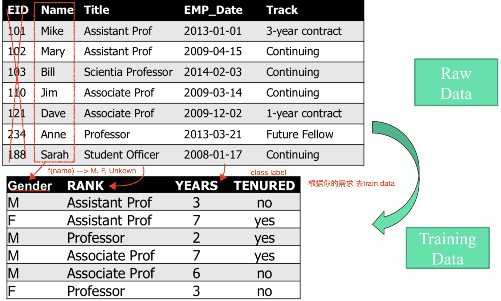
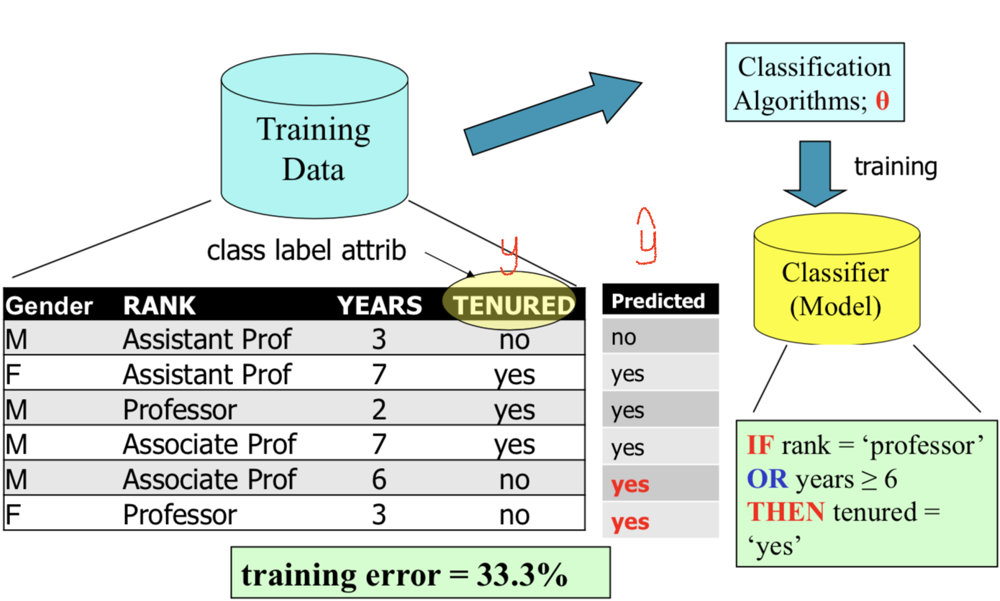
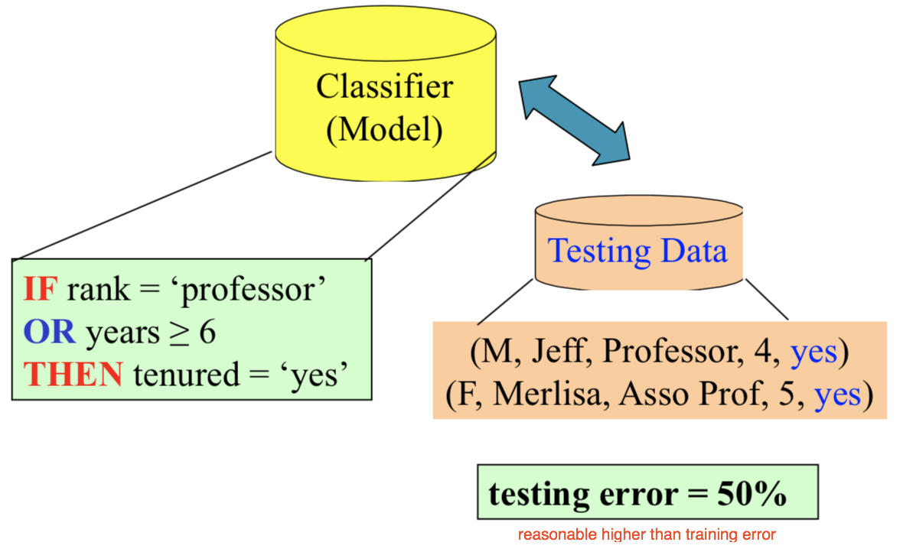
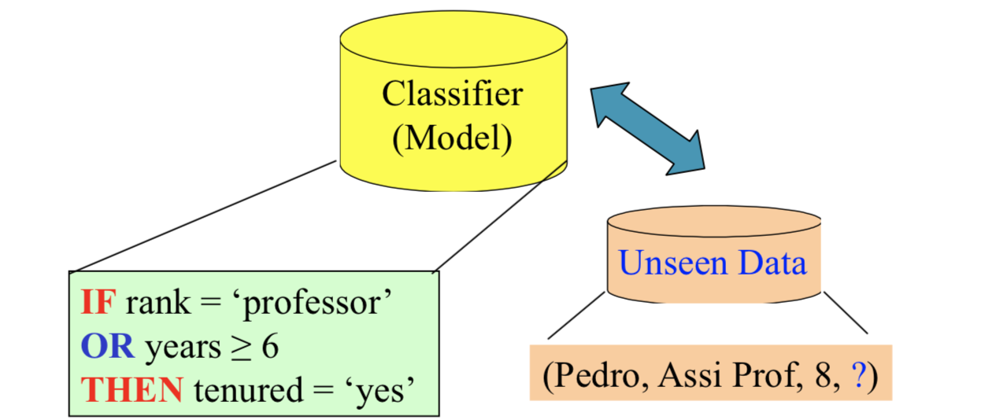
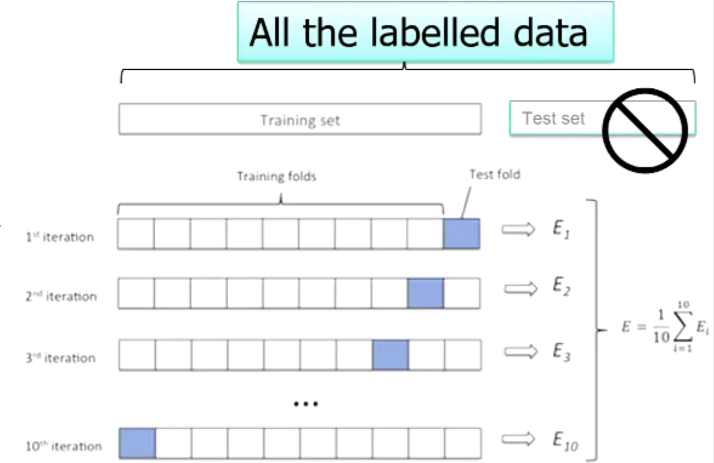

Abstract:
- Classification vs. Prediction
- Classification Process
Problem definition and preliminaries
Classification vs. Prediction
- Classficaiton
- predicts categorical class labels(discrete or nominal)
- classifies data(constructs a model) based on the training set and the values(class labels) in a classifying attribute and uses it in classifying new data
- Prediction(Regression 回归)
- models continuous-valued functions, i.e., predicts unknown or missing values
- Typical Applicaitions
- credit approval
- target marketing
- medical diagnosis
- treatment effectiveness analysis
Classification and Regression
- given a new object o(it could be a document, image, video), map it to a feature vector
- Predict the output(class label) y ∈ Y
- Binary classification: y={-1, +1} sometimes, {0,1}
- Multi-class classification: y = {1,2,…,C}
- Learn a classification function:
we try to learn a function that matches a vector in d dimension space into the domain of y
- Regression: y becomes a scalar value. Typically, a real value
Supervised Learning
- How to find f()? f ∈ F, most of time linear functions
- In supervised learning, we are given a set of training examples:
- Identical independent distribution (i.i.d) assumption (A critical assumption for machine learning theory)
Machine Learning Terminologies
- Supervised learning has input labelled data
- #instances x #attributes matrix/table
- #attributes = #features + 1（we use the last attribute for class attribute）
| Documents | F1 | F2 | F3 | F4 | F5 | F6 | F7 | … | Fn | Class |
|---|---|---|---|---|---|---|---|---|---|---|
| X1 | 2 | 3 | 0 | 0 | 0 | 0 | 0 | 7 | 0 | 1 |
| X2 | -1 | |||||||||
| X3 | 1 | |||||||||
| … | ||||||||||
| Xn | 1 |
- Labelled data split into 2 or 3 disjoint subsets
- Training data: build a model
- Training error = 1.0 – #correctly_classified / #training_instances
- Validation/development data: select/refine the model
- Testing data: evaluate the model
- Testing/generalization error = 1.0 – #correctly_classified / #testing_instances
- Training data: build a model
Overview of the classification process
Preprocessing & Feature Engineering

Training

Evaluate the Model on Testing Data

Use the Model in Production

How to judge a model?
- Based on training error or testing error? —— Testing error
- otherwise, this is a kind of data scooping -> overfitting
- What if there are multiple models to choose from?
- Further split a “test/development set” from the training set to see which model performance better
- Can we trust the error values on the development set?
- Need “large” development set
- k-fold cross-validation(CV)
- if we pre-split data, sometimes the model may good enough, but it just won’t work on some test data, we use k-fold CV to solve this problem.
E.g., 把all labelled data 分10份，每次用其中9份train，1份test，然后把10次的testing error取平均值作为 testing error

- if we pre-split data, sometimes the model may good enough, but it just won’t work on some test data, we use k-fold CV to solve this problem.
Supervised vs. Unsupervised Learning
Supervised learning (classification)
- Supervision: The training data (observations, measurements, etc.) are accompanied by labels indicating the class of the observations
- New data is classified based on the training set n
Unsupervised learning (clustering)
- The class labels of training data is unknown
- Given a set of measurements, observations, etc. with the aim of establishing the existence of classes or clusters in the data